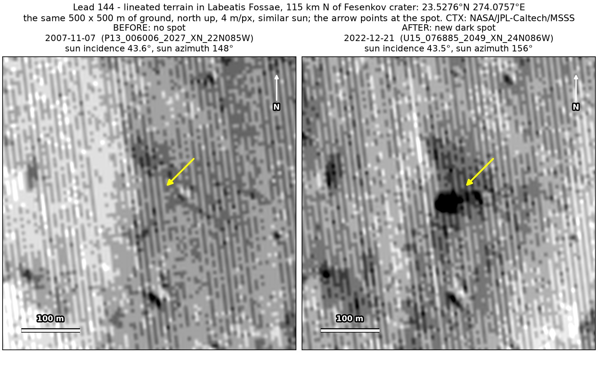
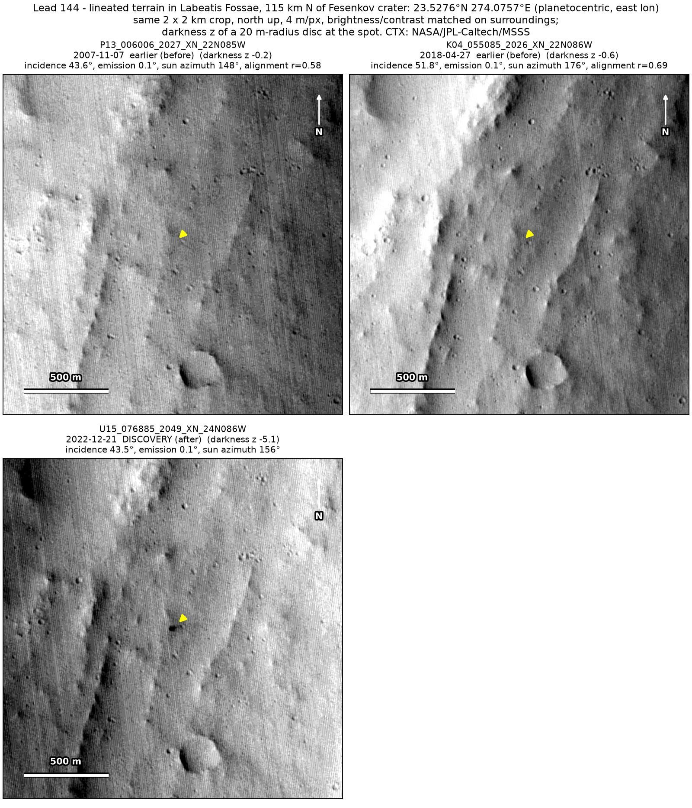
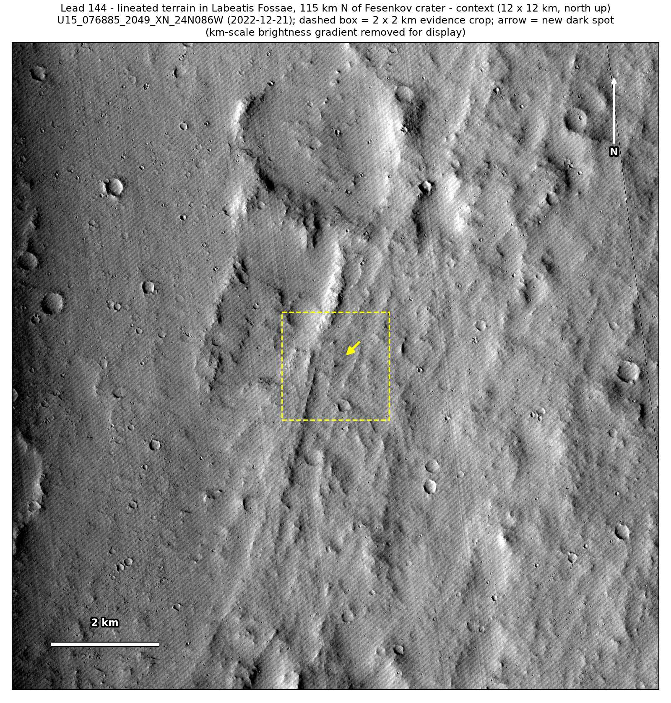

Professor of Mathematics
Paata Ivanisvili
Department of Mathematics, University of California, Irvine

← Possible new impact sites on Mars
Candidate 144: Lineated terrain in Labeatis Fossae, 115 km north of Fesenkov crater
Promising · roughly 55%

What changed. A compact dark spot about 35 m across appeared on lineated terrain in Labeatis Fossae, 115 km north of Fesenkov crater, between April 2018 and December 2022, in one CTX image so far.
Why it may be a new impact. An image from 2007, under almost the same sun as the December 2022 image, and one from 2018 show plain ground there; in the new image the spot holds the darkest pixels within 450 m, and once broad brightness differences are removed, the only clear change between the images is at the spot.
- Location
- 23.528° N, 274.076° E (85.924° W)
- Absent
- 7 November 2007 and 27 April 2018
- Present
- 21 December 2022
- Size
- Compact dark spot about 35 m across (42 × 32 m in the December 2022 image), darkest at its west end
- Confidence
- Promising candidate; roughly 55% that it is a new impact.
- Caveat
- Only one image shows it, so it is rated promising rather than strong, and that image is strongly compressed. A small dark dot at its eastern end was already there in 2018, the check with a dark dot nearby passes only in the 2007 image, and on dusty, lineated ground a short slope streak off a small scarp cannot be ruled out. It lies outside every footprint of the high-resolution HiRISE camera; the nearest ends 51.2 km away. Like every candidate here, it is unconfirmed: see the caveat.

